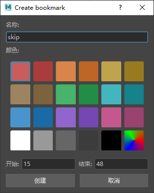
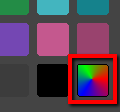

- 单击范围滑块(Range slider)中的“时间滑块书签”(Time Slider Bookmark)图标
 或按 Alt (Option) + T
或按 Alt (Option) + T

“创建书签”(Create Bookmark)窗口
在“书签”(Bookmark)窗口中，可以设置时间滑块书签的颜色、名称和持续时间或位置。
- 名称(Name)
- 为书签选择名称。将光标悬停在书签上时，此名称将作为工具提示而显示。

将光标悬停在时间滑块书签上时，其名称将显示
注： 如果未显示名称，请转到，并确保“显示工具提示”(Display Tooltips)选项在“弹出帮助”(Popup Help)区域中处于活动状态。 - 颜色(Color)
- 从显示的颜色图块设置书签的颜色。
- 如果需要自定义颜色，请单击“光谱”(Spectrum)图块，此时将打开“颜色选择器”(Color Chooser)窗口。“光谱”(Spectrum)图块变为您选择的颜色，但如果再次选择它，它将再次打开“颜色选择器”(Color Chooser)。

“创建书签光谱”(Create Bookmarks Spectrum)图块
- 关闭窗口时，图块将还原为光谱颜色。
- 开始/结束(Start/End)
- 设置书签长度的开始帧和结束帧。
- 如果在打开“创建时间滑块书签”(Create Time Slider Bookmark)窗口时在“时间滑块”(Time Slider)上选择了帧，则“开始”(Start)和“结束”(End)字段将填充选定帧的值。如果未选择任何帧，则“开始”(Start)和“结束”(End)字段将填充当前书签和下一个书签中的值。